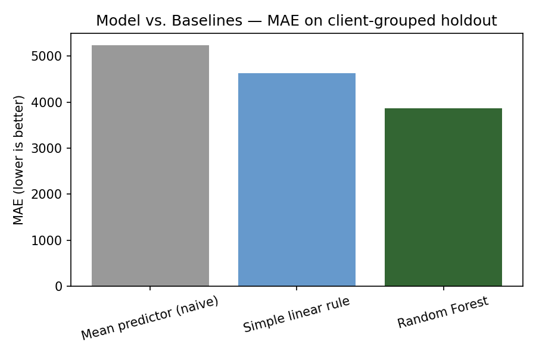
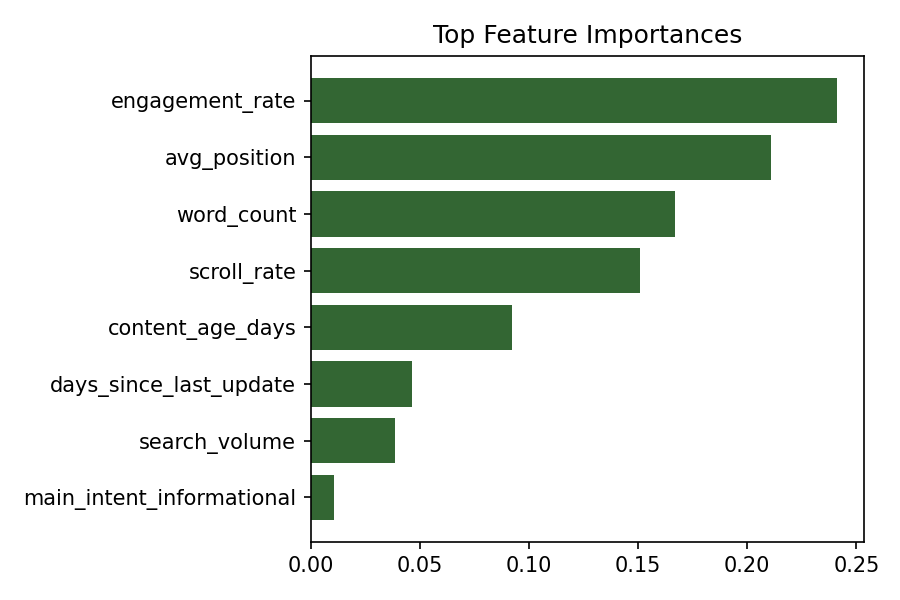

Research question: Which content pages should be prioritized first for SEO review?
Decision supported: SEO analysts and content managers deciding where to spend limited optimization effort across a large content library.
Unit of analysis: One content page (one row per page in the dataset).
Action: Analysts review and optimize the highest-ranked pages before spending time on lower-priority ones.
Cost of a wrong call: Resources spent on low-opportunity pages while genuinely high-opportunity pages go unreviewed — a real efficiency cost, not a safety one.
Why ML helps: Search performance depends on several interacting signals (visibility, engagement, freshness, positioning). A model can combine these into a single ranked score faster and more consistently than manual page-by-page review.
Dataset: content_refresh_anonymized.csv — ~30,000 anonymized
content records across 32 client groups, from the FlyRank ML Internship starter dataset.
Excluded as features: content_id, client_id (used only
for grouping, never as predictors), trend_direction, trend_pct
(label-derived), provider_used, model_used (system metadata, not
content signal).
Note on validation design: This release has no date column, so a time-aware split isn't possible here. We use a client-grouped split instead — the honest choice given what the data actually contains.
Public safety: All identifiers are pre-anonymized hashes. No client names, URLs, or private query strings appear anywhere in this project.
Target: score = impressions_90d × (1 − ctr) — a
visibility-weighted opportunity score.
Features (content-intrinsic only): search_volume, word_count,
content_age_days, days_since_last_update, avg_position, engagement_rate, scroll_rate,
competition_level, content_type, main_intent.
Deliberately excluded: impressions_90d, clicks_90d, ctr, and any
field derived from traffic history — these feed the target directly, so including them
would make the model circular rather than genuinely predictive.
Baselines: (1) a naive mean-predictor, (2) a simple single-rule linear baseline — both computed on the same split as the model, so the comparison is fair.
Validation design: GroupShuffleSplit by client_id,
80/20, seed 42 — no client's pages appear in both train and test.
Random Forest reduces error by roughly 26% versus a naive mean-predictor and 16% versus a simple single-rule linear baseline, using content-intrinsic signals only.
| Method | Split | MAE |
|---|---|---|
| Mean predictor (naive) | Grouped by client | 5,231.5 |
| Simple linear rule | Grouped by client | 4,629.3 |
| Random Forest | Grouped by client | 3,865.7 |


Below are representative top opportunities from the full ranked queue (30,000 pages), with reason codes an analyst can act on directly:
The full ranked queue (work/outputs/baseline_action_score.csv) and the top 100
(work/outputs/top100_search_opportunities.csv) are committed in the repo for
review.
work/notebooks/ (w01–w07 + capstone.ipynb) run top to bottom, no manual steps hiddenGroupShuffleSplit grouped by client_idBuilt on the FlyRank ML Internship dataset. Data credit: flyrank.ai.